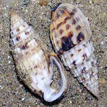
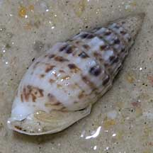
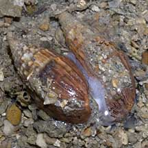

|
|
| shelled snails text index | photo index |
| Phylum Mollusca > Class Gastropoda |
| Cat's
ear pyramid snail Otopleura auriscati Family Pyramidellidae updated Sep 2020 Where seen? This snail is sometimes seen in sandy sheltered man-made lagoons on our Southern shores. Often, a pair or a handful are seen among the more numerous Bazillion snails. According to Abbott, it is uncommon. It is among the larger of the pyramid snails, which are mostly very tiny parasitic snails. Features: 2-2.5cm. Shell thick conical with a pointed tip. Shell opening large ear-shaped white. Shell texture ribbed spirals, colour white with spirals of brown smudged spots, sometimes plain orange. Operculum oval, thin, made of a horn-like material, yellowish. Body white, with large thin foot and a triangular shaped head with short slender tentacles. |
|
 Tanah Merah, Dec 09 |
 Lazarus, Feb 11 |
 Mating? Pulau Hantu, Jan 11 |
| Car's ear pyramid snails on Singapore shores |
On wildsingapore
flickr
|
| Other sightings on Singapore shores |
| Family
Pyramidellidae recorded for Singapore from Tan Siong Kiat and Henrietta P. M. Woo, 2010 Preliminary Checklist of The Molluscs of Singapore. ^from WORMS. +Other additions (Singapore Biodiversity Record, etc)
|
|
Acknowledgements
References
|